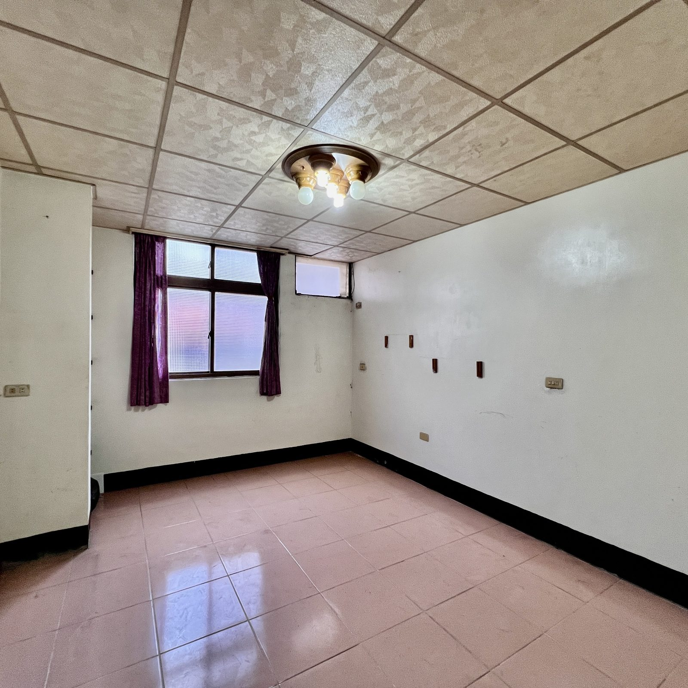

首頁 › 我接的案子 › 近林森國小 7米大面寬大地坪邊間透天

近林森國小 7米大面寬大地坪邊間透天
1,850萬單價約 52.3 萬/坪
- 權狀坪數
- 35.35 坪
- 主建物
- 30.84 坪
- 土地坪數
- 27.22 坪
- 格局
- 4房2廳3衛
- 屋齡
- 40 年
- 樓層
- 1～3.5樓（含增建）
- 車位
- 門前停車
- 使用分區
- 都市計畫住宅區
- 物件類型
- 透天
- 位置
- 中壢區 銘傳街
- 近林森國小
- 7米大面寬
- 邊間採光好
- 門前8米路
- 可接天然瓦斯
買這間，錢要怎麼準備？
自備款（2 成）370 萬
貸款（8 成）1,480 萬
每月房貸（30 年、2.2%）56,196 元
物件介紹
位在中壢後站體育園區週邊，走路就到林森國小。邊間、7 米大面寬，通風採光都好；門前路寬約 8 米，車子進出方便。
- 地坪 27.22 坪，4 房 3 衛，空間大好規劃
- 權狀 35.35 坪，另有增建約 20 坪（以現場為準）
- 有天然瓦斯管線，可以申請安裝
- 目前空屋，方便約看